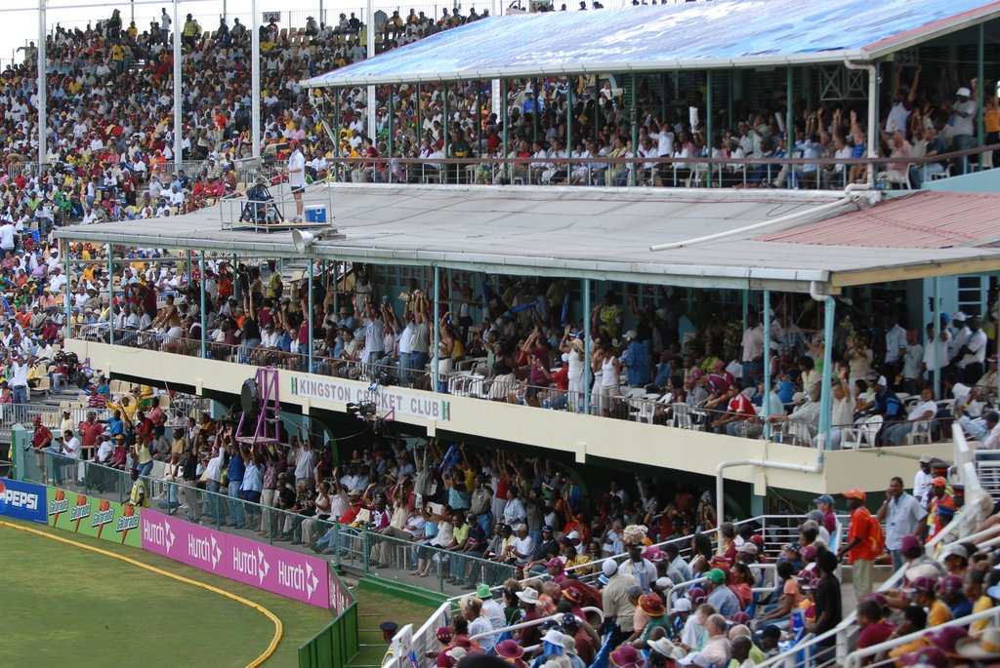

Established in 1930, Sabina Park serves as the Kingston Cricket Club's home. It is located in Kingston Jamaica. The first test match was played in the same year it was established. This cricket ground was the venue of the first triple century that Any Adams of England scored while playing against the West Indies in 1930. He made 325 runs in that match. Sir Garfield Sobers made 365 runs and was not out in a Test match at this ground which went ahead to become a record unbroken for 36 years. It has a capacity to seat, 30,000 people and it is under the construction for the lights. The end names are The Headley Stand End and the Blue Mountains End. Dominating the south is the George Headley stand which is named after a person and can accommodate 6000 spectators. The Party Stand has replaced the Mound stand. The Blue Mountains serve to form a backdrop to the north. This cricket ground has medium size compared to other stadiums. It can fit more 400 meter running track and has increased its spectator capacity with the help of some refurbishing. It was the same venue where a Test match was abandoned in 1998 when England toured the country due to the pitch being unfit for the match.